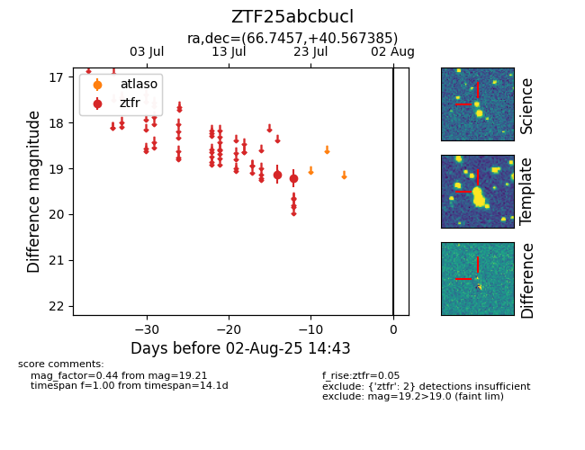

Target ZTF25abcbucl at 2025-08-02 14:43, see:
FINK: fink-portal.org/ZTF25abcbucl
Lasair: lasair-ztf.lsst.ac.uk/objects/ZTF25abcbucl
ALeRCE: alerce.online/object/ZTF25abcbucl
alt names
ZTF25abcbucl (ztf,fink)
coordinates:
equatorial (ra, dec) = (66.7457,+40.56739)
galactic (l, b) = (161.0212,-5.85003)
photometry
last ztfr=19.21
2 ztfr detections
